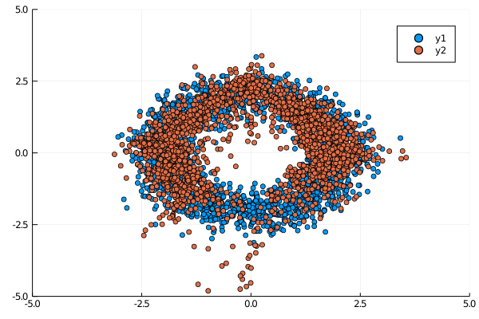

NICE network
For the definition of this network and concepts of normalizing flow, please refer this nice blog: https://lilianweng.github.io/lil-log/2018/10/13/flow-based-deep-generative-models.html, and the pytorch notebook: https://github.com/GiggleLiu/marburg/blob/master/notebooks/nice.ipynb
using NiLang, NiLang.AD
using LinearAlgebra
using DelimitedFiles
using Plotsinclude the optimizer, you can find it under the Adam.jl file in the examples/ folder.
include("Adam.jl")Model definition
First, define the single layer transformation and its behavior under GVar - the gradient wrapper.
struct NiceLayer{T}
W1::Matrix{T}
b1::Vector{T}
W2::Matrix{T}
b2::Vector{T}
y1::Vector{T}
y1a::Vector{T}
end
NiLang.AD.GVar(x::NiceLayer) = NiceLayer(GVar(x.W1), GVar(x.b1), GVar(x.W2), GVar(x.b2), GVar(x.y1), GVar(x.y1a))
"""Apply a single NICE transformation."""
@i function nice_layer!(x::AbstractVector{T}, layer::NiceLayer{T},
y!::AbstractVector{T}) where T
@routine @invcheckoff begin
i_affine!(layer.y1, layer.W1, layer.b1, x)
@inbounds for i=1:length(layer.y1)
if (layer.y1[i] > 0, ~)
layer.y1a[i] += layer.y1[i]
end
end
end
i_affine!(y!, layer.W2, layer.b2, layer.y1a)
~@routine
# clean up accumulated rounding error, since this memory is reused.
@safe layer.y1 .= zero(T)
endHere, in each layer, we use the information in x to update y!. During computing, we use the y1 and y1a fields of the network as ancilla space, both of them can be uncomputed at the end of the function. However, we need to erase small numbers to make sure the rounding error does not accumulate.
A nice network always transforms inputs reversibly. We update one half of x! a time, so that input and output memory space do not clash.
const NiceNetwork{T} = Vector{NiceLayer{T}}
"""Apply a the whole NICE network."""
@i function nice_network!(x!::AbstractVector{T}, network::NiceNetwork{T}) where T
@invcheckoff for i=1:length(network)
np ← length(x!)
if (i%2==0, ~)
@inbounds nice_layer!(view(x!,np÷2+1:np), network[i], view(x!,1:np÷2))
else
@inbounds nice_layer!(view(x!,1:np÷2), network[i], view(x!,np÷2+1:np))
end
end
end
function random_nice_network(nparams::Int, nhidden::Int, nlayer::Int; scale=0.1)
random_nice_network(Float64, nparams, nhidden, nlayer; scale=scale)
end
function random_nice_network(::Type{T}, nparams::Int, nhidden::Int, nlayer::Int; scale=0.1) where T
nin = nparams÷2
scale = T(scale)
y1 = zeros(T, nhidden)
NiceLayer{T}[NiceLayer(randn(T, nhidden, nin)*scale, randn(T, nhidden)*scale,
randn(T, nin, nhidden)*scale, randn(T, nin)*scale, y1, zero(y1)) for _ = 1:nlayer]
endrandom_nice_network (generic function with 2 methods)
Parameter management
nparameters(n::NiceLayer) = length(n.W1) + length(n.b1) + length(n.W2) + length(n.b2)
nparameters(n::NiceNetwork) = sum(nparameters, n)
"""collect parameters in the `layer` into a vector `out`."""
function collect_params!(out, layer::NiceLayer)
a, b, c, d = length(layer.W1), length(layer.b1), length(layer.W2), length(layer.b2)
out[1:a] .= vec(layer.W1)
out[a+1:a+b] .= layer.b1
out[a+b+1:a+b+c] .= vec(layer.W2)
out[a+b+c+1:end] .= layer.b2
return out
end
"""dispatch vectorized parameters `out` into the `layer`."""
function dispatch_params!(layer::NiceLayer, out)
a, b, c, d = length(layer.W1), length(layer.b1), length(layer.W2), length(layer.b2)
vec(layer.W1) .= out[1:a]
layer.b1 .= out[a+1:a+b]
vec(layer.W2) .= out[a+b+1:a+b+c]
layer.b2 .= out[a+b+c+1:end]
return layer
end
function collect_params(n::NiceNetwork{T}) where T
out = zeros(T, nparameters(n))
k = 0
for layer in n
np = nparameters(layer)
collect_params!(view(out, k+1:k+np), layer)
k += np
end
return out
end
function dispatch_params!(network::NiceNetwork, out)
k = 0
for layer in network
np = nparameters(layer)
dispatch_params!(layer, view(out, k+1:k+np))
k += np
end
return network
enddispatch_params! (generic function with 2 methods)
Loss function
To obtain the log-probability of a data.
@i function logp!(out!::T, x!::AbstractVector{T}, network::NiceNetwork{T}) where T
(~nice_network!)(x!, network)
@invcheckoff for i = 1:length(x!)
@routine begin
xsq ← zero(T)
@inbounds xsq += x![i]^2
end
out! -= 0.5 * xsq
~@routine
end
endThe negative-log-likelihood loss function
@i function nice_nll!(out!::T, cum!::T, xs!::Matrix{T}, network::NiceNetwork{T}) where T
@invcheckoff for i=1:size(xs!, 2)
@inbounds logp!(cum!, view(xs!,:,i), network)
end
out! -= cum!/size(xs!, 2)
endTraining
function train(x_data, model; num_epochs = 800)
num_vars = size(x_data, 1)
params = collect_params(model)
optimizer = Adam(; lr=0.01)
for epoch = 1:num_epochs
loss, a, b, c = nice_nll!(0.0, 0.0, copy(x_data), model)
if epoch % 50 == 1
println("epoch = $epoch, loss = $loss")
display(showmodel(x_data, model))
end
_, _, _, gmodel = (~nice_nll!)(GVar(loss, 1.0), GVar(a), GVar(b), GVar(c))
g = grad.(collect_params(gmodel))
update!(params, grad.(collect_params(gmodel)), optimizer)
dispatch_params!(model, params)
end
return model
end
function showmodel(x_data, model; nsamples=2000)
scatter(x_data[1,1:nsamples], x_data[2,1:nsamples]; xlims=(-5,5), ylims=(-5,5))
zs = randn(2, nsamples)
for i=1:nsamples
nice_network!(view(zs, :, i), model)
end
scatter!(zs[1,:], zs[2,:])
endshowmodel (generic function with 1 method)
you can find the training data in examples/ folder
x_data = Matrix(readdlm(joinpath(@__DIR__, "train.dat"))')
import Random; Random.seed!(22)
model = random_nice_network(Float64, size(x_data, 1), 10, 4; scale=0.1)Before training, the distribution looks like 
model = train(x_data, model; num_epochs=800)After training, the distribution looks like 
This page was generated using Literate.jl.